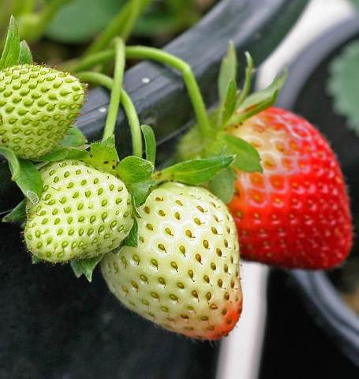

Description:
Fresca strawberry seeds are so tiny it's hard to believe that these miniature seeds produce big,
mouthwatering traditional strawberries. Start the seeds indoors during the winter and place the seedlings out after the last frost.
While they may not produce much fruit the first year, these sprawling plants will eventually yield heavily over a long season.
They are considered everbearing, and will flower over and over if plants are kept picked. This strawberry is ideal for containers, raised beds, or hanging baskets.
For fruits the first year, give them a really early start in December or January. Follow the growing instructions below, and then grow the seedlings on under bright artificial lights.